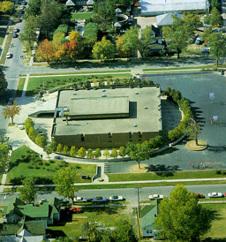
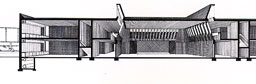
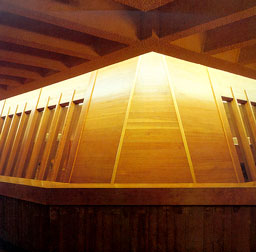
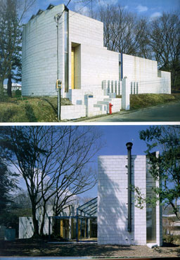
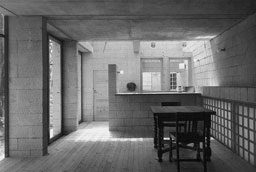
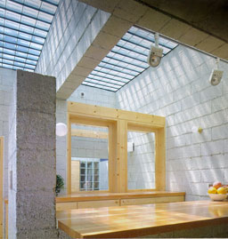
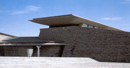
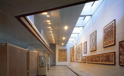

Lincoln Elementary School, Colombus, Indiana, 1965-1967
Gunnar Birkerts and assciates

GA Architects 2
William Marlin & Yukio Futagawa |
The school has the form of a square and is
two stories high. In the middle a auditorium is placed surrounded
by a ring of corridors and by an outlying ring of classrooms.
From the second floor corridor one can view the activities in
the auditorium. Also Daylight enters from the corridor into the
auditorium as can be seen on the left picture. On the right photograph
the second floor corridor can be seen with its windows to the
auditorium. Daylight reflects from above against the wall into
the corridor en through the windows in the auditorium. |

 |
|
Hekiei, Ito, Shizuoka, Japan, 1986-1987
Shunji KondoGA Houses 24 RTG 78 HOU
A.D.A. EDITA Tokyo |
As can be seen on the two left pictures the
house has a closed facade facing the road and a open facade facing
the garden providing for views on the overhanging trees. The
only windows in the closed facade are placed nearby ground level
protected by a grid of blocks or are slits providing for indirect
natural light in the interior. On the first photograph on the
right is to be seen how daylight from above enters the kitchen.
It seems like the incoming daylight defines two separate areas
in the room by the difference in luminance. The second picture
shows the windows in the ceiling in greater detail.
|

 |
|
Dunhuang Cave Cultural Asset Reservation and exhibition
Center, Dunhuang, China, 1994
Nikken Sekkei LtdInternational Architecture Yearbook
Images Australia |
The building, made of reinforced concrete, is
placed partly below ground level. This to offer resistance to
the strong seasonal winds and severe temperature differences
between day and night and to prevent damaging the surrounding
historical environment. The photograph on the right shows the
interior of an exhibition hall. The wall that shows the paintings
is lightened up by indirect daylight coming form the roof. The
shelves and the diffuse glass make sure no direct sunlight shines
upon the paintings. |
 |
|
|
|
|
|
|
|
|
|
|
|
|
|
|